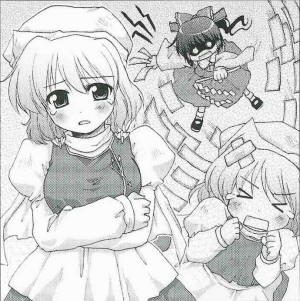
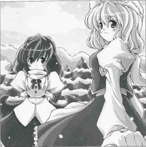

|
Season 119, May 1st
>Spring-Summoning Ritual Held to Counter Prolonged Cold Wave It's similar to an incantation to drive away the cold.Currently in the month of X, due to the temperature being significantly lower than the average at this time of year, the days of extremely cold weather continue. In this snow storm, traces of something believed to resemble a ritual have been spotted. A magic specialist says this is a ritual to summon spring. In a spring-summoning ritual, acting as if spring has come creates an incantation that invites spring to come in actuality. The specifics aren't known, but signs of a person related to the cold wave being assaulted were found, which may or may not be related to this ritual. The victim of the assault was the youkai of winter, Letty Whiterock (youkai). Judging from the scene of the scuffle, she was completely beaten. Perhaps the ones who started this fight felt it was a more reliable method than the spring-summoning ceremony. After she recovered from being buried in the snow, she spoke critically of the event. "Summoning spring? I don't know what that is, but it was a human who attacked me, despite their fear of youkai. I was just flying around, enjoying the long winter. Blizzards are an uncommon occurance, so you'd think they would be more eager to enjoy it." The youkai who was attacked for her perceived connection to the cold wave did not agree with the idea of a spring-summoning ritual. Most likely, the youkai celebrating the snow storm passed by the human-centered ritual or a place that was irritated by the cold, and then impulsively brought attention to herself. However, the spring-summoning ritual is not complete once winter has been driven off. Specialists say that after winter is driven away, there must be a ceremony to welcome spring. For the spring-welcoming ceremony, one makes things that look like cherry petals and then scatter them, making a cherry blossom blizzard, for example. It's possible that the spring-summoning ritual will continue until spring comes.
(Aya Shameimaru)
|
|
 Aya Spring still hasn't arrived, huh? Letty This year has been so wonderful. Aya Is it because of the long winter? Letty That's right. It'd be better if it would stay like this year-round. There's nothing good about spring. Just a whole lot of pollen floating around, that's all. Aya Anyway, I wonder why this year's winter has been so long. Letty Ah, do you suspect I'm behind this? It's beyond my abilities, I'll have you know. Aya That was just a guess on my part. But since they've finished the spring-summoning ritual, it ought to be here soon. Letty What kind of ritual is that? I'm just flying along, enjoying the weather, and suddenly I get attacked, for no reason whatsoever. Aya I imagine even the humans are getting irritated. It's cold, and the blizzard shows no signs of stopping. If not for that, I doubt you would have been assaulted, since humans attacking youkai are practically unheard of. Letty I guess you're right... Aya Well, among the humans I know, there's one that would come at you for no reason. Letty This human... You can't mean... Aya The one who was welcoming spring... I mean, attacked you, wouldn't happen to be all red and white, by chance? Letty Boo-hoo-hoo... Aya There simply wasn't anything you could have done. Just think of it as a stroke of bad luck, and... Letty Does it even make sense? I was having so much fun playing around in the snow, and thought I'd tease the human that showed up just a bit, that's all. Aya By the way, what do you do during the other seasons? Letty I go into a deep sleep during spring, stay inactive through summer, and nap during autumn. I stay hidden and rest in places out of reach of the sunlight. I don't move or breathe much... Aya It sure is a tough life... Letty That's why I must enjoy winter for all it's worth. Aya But it gets treated as a scapegoat during the spring-summoning ritual. Clearly, spring is more favored by everyone else. Can you really enjoy it? Letty *Sigh* Winter is supposed to be cold. It's wrong to treat it so cruelly! Aya Wouldn't everyone be happy if you tried to stay active in summer and reduced the heat a little? Letty Oh, that's a good idea. Well, that's what I'd like to say, but I manipulate the cold. Don't confuse it with manipulating cold air like a certain fairy. [Cirno] Aya They sound similar to me... Letty Those fairies are just minor anomalies of nature. I, on the other hand, am a great youkai that lives in nature. When it's cold out, making it even colder is my greatest joy. Aya A youkai that has become complacent is a problem. A youkai's job is to attack humans. Letty But I did attack that human from before... Aya But that doesn't work if you only come out as a sacrifice for a ritual. Anyway, I'm starting to feel chilly, so maybe I should leave now. Letty That's so cold of you. I thought you said it was almost spring... |
| [PREVIOUS ARTICLE : Alice] | [INDEX] | [NEXT ARTICLE : Yuyuko] |